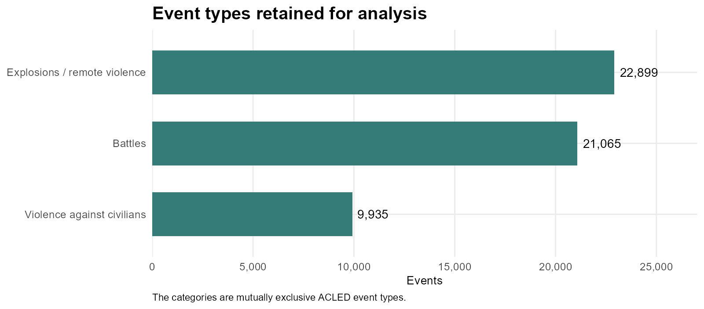
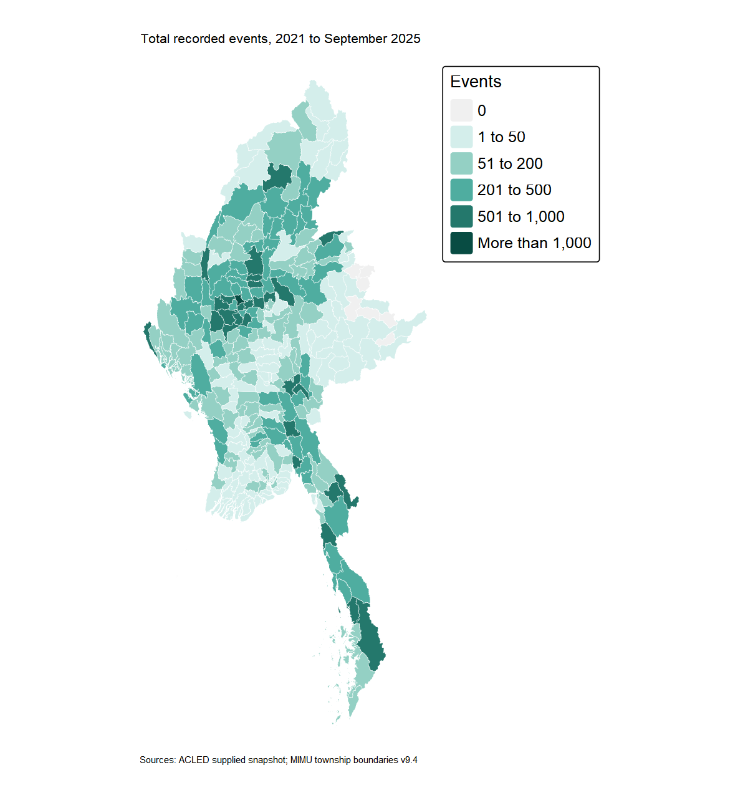
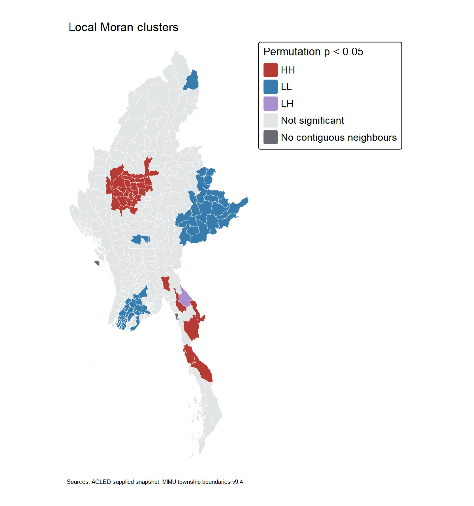
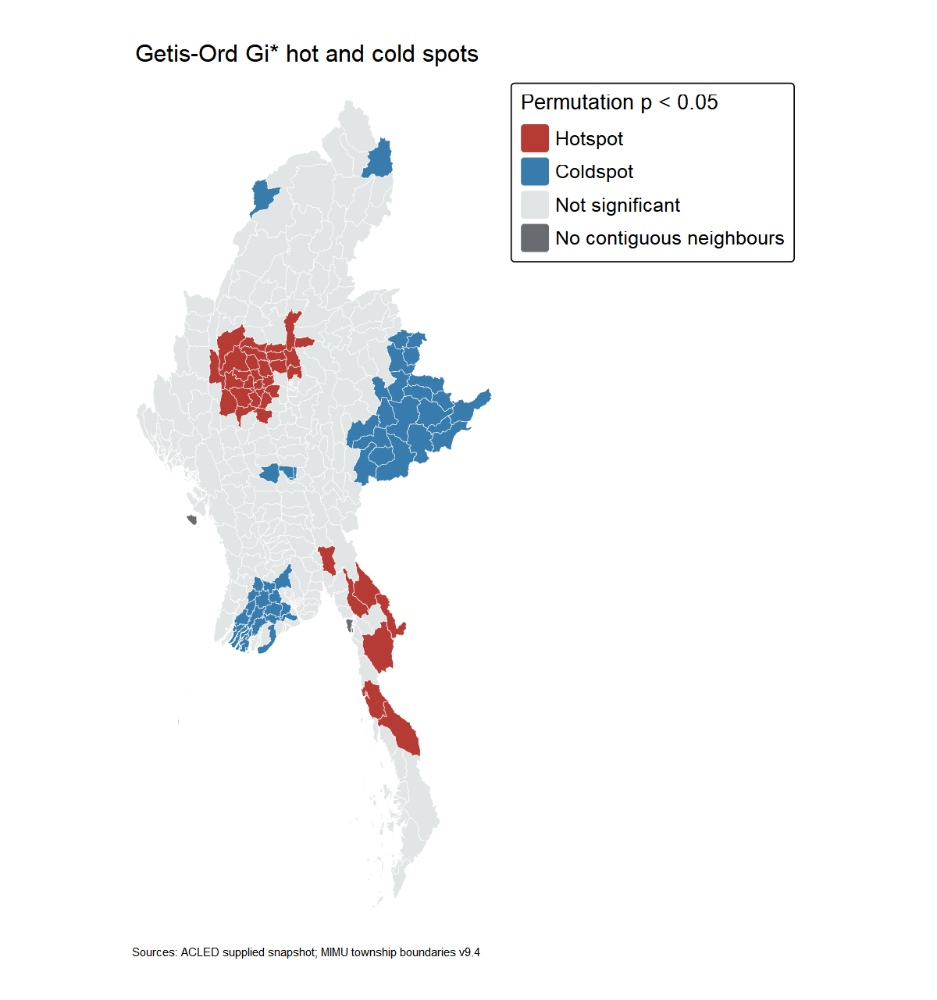
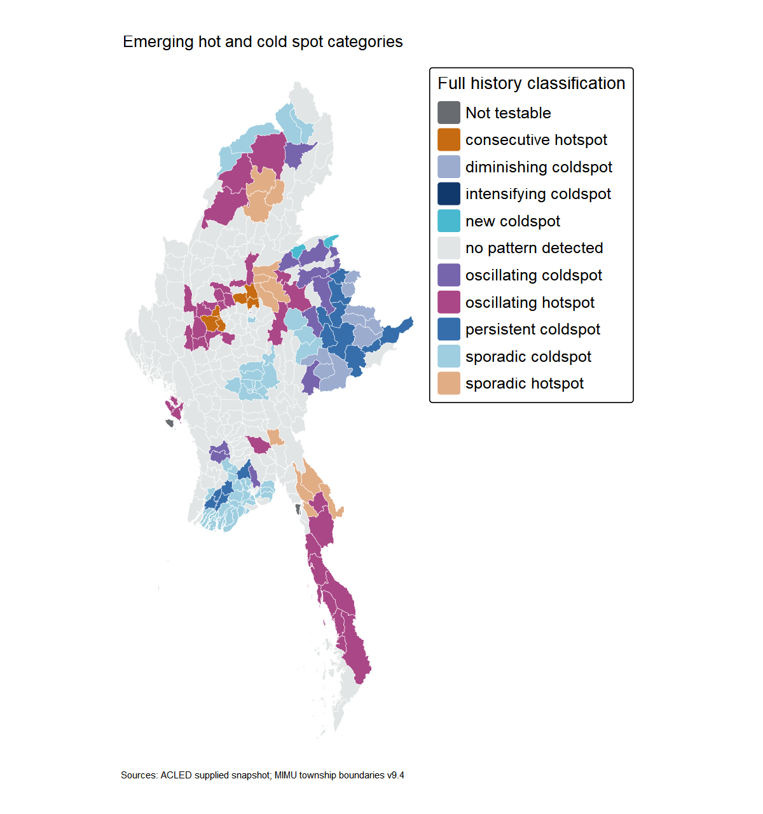
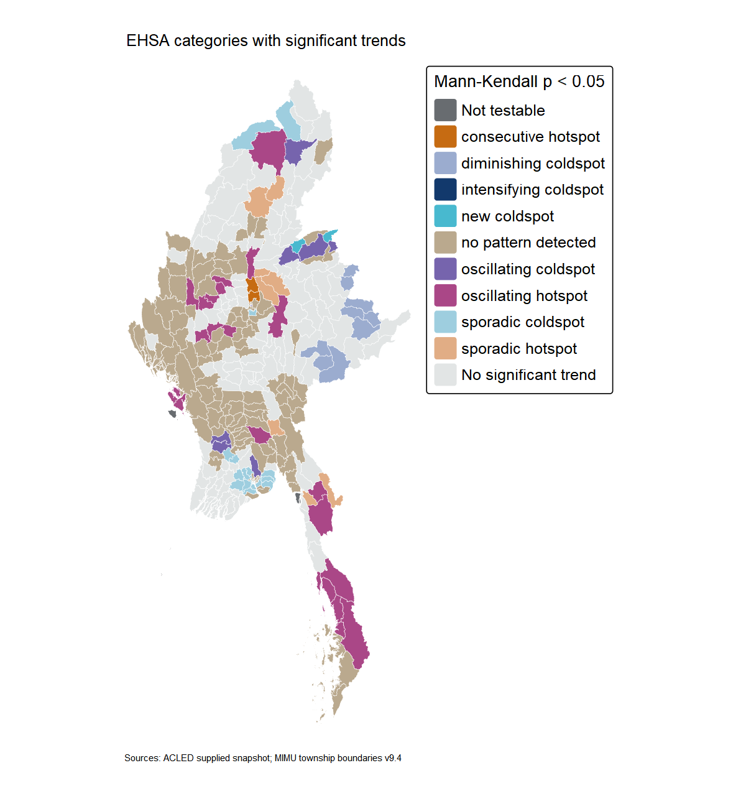
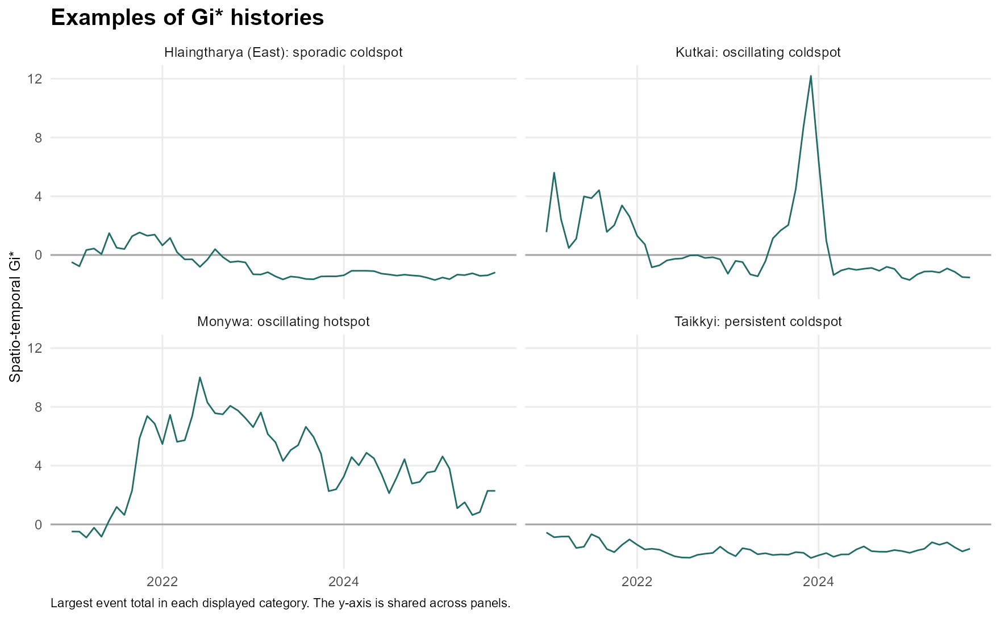

| Step | Input records | Removed | Remaining |
|---|---|---|---|
| raw | 87109 | 0 | 87109 |
| date_in_scope | 87109 | 0 | 87109 |
| myanmar | 87109 | 6 | 87103 |
| three_violence_types | 87103 | 33103 | 54000 |
| township_precision | 54000 | 93 | 53907 |
| valid_coordinates | 53907 | 0 | 53907 |
| unique_township_match | 53907 | 8 | 53899 |
Conflict Patterns across Myanmar Townships
Take-Home Exercise 2: Geospatial Analytics for Peace
Exercise overview · Executive summary
1 Introduction and questions
In this exercise, I examine the distribution of recorded violence across Myanmar townships between 1 January 2021 and 30 September 2025. I focus on three ACLED event types: Battles, Explosions/Remote violence, and Violence against civilians. Keeping this definition consistent will help me compare places and months without mixing peaceful protests and strategic developments into the main outcome.
Three questions guide the analysis:
- Where are recorded conflict events concentrated?
- Which townships form significant high or low clusters, and which differ from their neighbours?
- Where do hot and cold spot patterns appear, persist, strengthen or weaken over time?
2 Data and study design
| Source | Coverage and role |
|---|---|
| User-supplied ACLED CSV | January 2021–September 2025; 87,109 rows, each identified by event_id_cnty. The original download date is unknown. |
| Myanmar Township Boundaries MIMU v9.4 | Official nationwide WFS snapshot acquired on 5 October 2026, Singapore time; 330 townships, 330 unique PCODEs, WGS84. The source field PCode_V is 9.4. |
The analytical unit is one township in one month. I use the same boundary snapshot throughout the study; it does not reconstruct changes in boundaries or territorial control. The main outcome is the number of retained events. Type-specific counts and reported fatalities provide descriptive context, rather than separate repeated hypothesis tests.
The ACLED codebook explains the event categories and precision fields. The MIMU layer page supplies the version and source description. URLs, acquisition times and SHA-256 checksums are recorded in the project. The ACLED reference page captured now is not assumed to be the edition used when the CSV was downloaded.
In this selection, Battles covers armed encounters between organised groups. Explosions/Remote violence covers attacks using explosives or other destructive weapons at range, such as shelling and airstrikes. Violence against civilians covers violence by organised armed actors against unarmed non-combatants. ACLED applies an event hierarchy, so civilian harm during a battle or an explosive attack may belong to another category. These three categories therefore do not provide a separate census of all civilian harm. These descriptions follow the ACLED codebook.
3 Data preparation and quality
3.1 Filtering the records
I first check that event IDs are present and unique and that reported fatalities are nonnegative integers. Missing or duplicated IDs and invalid fatality values stop the workflow for inspection. Date, country, event-type, precision and coordinate exclusions are then counted in sequence. I preserve the original files and store exclusions separately.
The three selected event types contain 54,000 Myanmar records. Removing 93 records with geographic precision 3 leaves 53,907 candidates. Their coordinates are numerically valid. Precision 1 and 2 are retained, but they should not be read as exact incident locations in every case. I compare the LMSA result with a precision-1-only analysis to assess this choice.
3.2 Assigning events to townships
I read the coordinates as WGS84 longitude and latitude and transform the polygons to the same CRS. st_intersects() uses closed polygons so that shared-edge or overlapping matches are visible. An event is retained only when it intersects exactly one township. I use TS_PCODE as the key because names can repeat. No unmatched event is moved to the nearest township.
The boundary contains 330 valid, nonempty polygons with unique codes. Of 53,907 candidate events, 53,899 match exactly one township, eight match none, and none match multiple townships. The retained events cover 322 townships and all 57 months. The other eight townships remain present in the complete panel.
Missing township text is not, by itself, a reason to discard a record: 102 retained events lack admin3 but have a unique spatial match. Eight retained events have different township names and 36 have different district names after simple punctuation and case normalisation. These differences include alternative spellings and administrative distinctions, as well as possible location disagreements. I retain the spatial assignments and record the differences for inspection; a name mismatch is not automatically a false location.
3.3 What this preparation does not establish
The exclusions are a reproducible quality rule, not proof that the retained locations are exact. Unmatched coordinates can reflect coastal features, boundary scale or coding differences. I have not corrected them without evidence. Likewise, an absent event record is not proof that violence did not occur. Reporting access and coverage may differ between townships and periods.
4 Township-month panel and descriptive patterns
I expand the study to all 330 townships and 57 months, then join event counts by PCODE and month. The completed panel contains 18,810 rows, including 9,533 with zero recorded events, and still sums to 53,899 events. Geometry is stored once alongside the table to form the space-time cube. Zero means no retained record in the supplied data, rather than confirmed absence of violence.
4.1 Monthly pattern

Recorded events vary substantially across the study period. The highest month is November 2023, with 1,466 events, followed by December 2023 with 1,449. This suggests particularly high recorded activity near the end of 2023, rather than a steady increase every month. To compare recent years fairly, I use January to September in each year. The retained count falls from 9,969 in those months of 2024 to 8,736 in 2025, a decrease of 12.4%. This describes the dataset, not a confirmed improvement in security. Reporting access, the geographic mix of events and the excluded event types may affect the totals. The monthly series provides context for the township analysis but cannot identify the causes of changes.
4.2 Event composition

Explosions and remote violence form the largest group, with 22,899 events or 42.5% of the retained total. Battles account for 21,065 events, while violence against civilians accounts for 9,935. Combining these categories gives a consistent measure to follow over time, but townships with similar totals may have different mixtures of events. Violence against civilians is an ACLED category, not a count of all incidents in which civilians were harmed. The reported fatality field is also a separate measure: the retained records contain 89,005 reported fatalities, which I do not treat as a complete estimate of deaths. I interpret the maps as patterns of recorded activity and avoid assuming that each event represents the same harm.
4.3 Geographic distribution

The events are unevenly distributed. Monywa in Sagaing has the largest retained total, with 1,039 events, followed by Kawkareik in Kayin with 946 and Myaing in Magway with 934. Other high-count townships include Kale and Shwebo in Sagaing, Hpakant in Kachin, and Madaya in Mandalay. These places are starting points for examining local relationships, but a high count alone does not establish a significant hotspot. The ten highest-count townships together account for 15.9% of all retained events, so the activity is not confined to only a few locations. The map shows counts rather than population rates. Differences in township area, population and reporting coverage remain relevant, and the eight zero-count townships should not be interpreted as proven safe areas.
5 Spatial weights and statistical assumptions
I use first-order Queen contiguity: townships are neighbours if their polygons share an edge or vertex. Row-standardised weights make the neighbours contribute a weighted average. Local Moran’s I excludes the focal township; Gi* includes it. This represents local administrative proximity, not actual travel, armed-group movement or communication. The fixed graph contains 1,716 directed links and an average of 5.2 neighbours across all 330 townships.
Chaungzon, Munaung and Cocokyun have no contiguous neighbours under the source geometry. They remain in the descriptive data and comparison population, but I mask their local statistical labels and p-values. I do not add distant neighbours merely to obtain a classification for every township. The three isolated townships account for three of the graph’s four connected components.
Standalone LMSA uses 999 conditional permutations, seed 6262026, one CPU and two-sided rank permutation p-values. I classify the full-period raw event count, without a logarithmic transformation. Main maps use unadjusted p < 0.05. A Benjamini–Hochberg (BH) comparison treats each method’s 327 non-isolated townships as one testing family. No population denominator is available in the supplied data. Maps use an equal-area display projection centred on Myanmar, while WGS84 is retained for joins and adjacency construction.
6 Local measures of spatial association
6.1 Local Moran’s I
Local Moran’s I compares a township’s deviation from the national mean with the weighted deviations of its neighbours. The permutation test evaluates how unusual that local association is under conditional random reassignment. HH and LL describe clusters; HL and LH describe spatial outliers. A quadrant label is displayed only when the permutation p-value passes the cutoff.

The main map contains 35 high-high and 49 low-low townships, one low-high outlier and no high-low outliers. Sagaing contains 17 of the high-high townships, followed by Mandalay with seven and Magway with five. This indicates a concentration of high recorded counts and high neighbouring counts in parts of central Myanmar. Low-low clusters include parts of Ayeyarwady, Yangon and Shan. Hlaingbwe in Kayin is the single low-high outlier: its 61 events are low relative to its neighbours, with a permutation p-value of 0.004. This contrast is worth investigating but does not establish why the township differs. Because the map combines 57 months, it may conceal changes within individual places. EHSA is needed to examine whether their relative patterns persisted or changed.
6.2 Getis–Ord Gi*
Gi* evaluates whether a focal township and its neighbourhood contain unusually high or low values. Unlike Local Moran’s I, it includes the focal value in the neighbourhood sum. I use the standardised Gi* sign to distinguish hot from cold spots and the two-sided conditional permutation p-value for significance.

Gi* identifies 35 hotspots and 50 coldspots, leaving 242 non-significant townships and three isolated ones. Sixteen hotspots are in Sagaing, seven in Mandalay and five in Magway. Salingyi, Yesagyo and Myaing have the three largest standardised Gi* values, supporting the broader central concentration seen in the Moran map. The methods do not agree exactly because they ask different questions and handle the focal township differently. A coldspot indicates low counts relative to this reference distribution, not safety or an absence of severe events. The maps are exploratory: testing many townships at the same cutoff creates opportunities for false positives. The adjusted comparison below shows that a smaller group retains statistical support after accounting for multiple tests.
6.3 Multiple testing and geographic precision
| Specification | Moran HH | Moran LL | Moran LH | Gi* hot | Gi* cold |
|---|---|---|---|---|---|
| Main: geographic precision 1 or 2 | 35 | 49 | 1 | 35 | 50 |
| Main with BH-adjusted p < 0.05 | 15 | 26 | 1 | 17 | 29 |
| Precision 1 only | 33 | 49 | 4 | 36 | 51 |
After BH adjustment, the main Moran high-high count falls from 35 to 15 and the Gi* hotspot count from 35 to 17. Thus the unadjusted maps should not be read as equally strong evidence for every coloured township. The precision-1-only analysis contains 29,588 events and uses the same graph, permutations and seed. Among the 327 non-isolated townships, Moran classifications agree in 300 cases (91.7%) and Gi* classifications in 303 (92.7%). This supports some broad stability, but 27 and 24 classifications respectively change. The full transition tables are retained, since a high overall agreement can hide changes among specific significant clusters.
7 Emerging hot spot analysis
7.1 From monthly Gi* to township histories
I use monthly counts with a one-month backward neighbourhood (k = 1). Each bin includes its own township and Queen neighbours in the current and previous month. January 2021 has only the current month, giving that first bin a shorter temporal neighbourhood. The spatial weights repeat across temporal neighbours under the installed sfdep implementation.
I fix seed 6262027 and use 999 permutations. Observed Gi* uses the current month’s national mean and variance as its reference. The implementation reports the smaller of its two permutation tail probabilities without doubling it. I retain this directional convention with bin threshold p ≤ 0.05 for EHSA; it differs from the standalone two-sided Gi* p-values. Its permutation calculation resamples values from across the cube and does not preserve each month’s national distribution or fix the focal observation. These choices matter when national activity changes over time. This is the classroom sfdep approach, not an exact reproduction of ArcGIS or its FDR procedure.
Mann–Kendall tests the ordered Gi* series for each township. Positive tau indicates increasing Gi* relative to its reference, while negative tau indicates decreasing Gi*. Tau is not an estimate of additional events per month. Trend p-values are kept separate from monthly-bin permutation p-values. Adjacent bins share observations, so the usual temporal-independence assumption is imperfect and trend significance should be treated cautiously.
7.2 Classifying the histories
I use sign-aware rules based on the published EHSA category descriptions. The installed sfdep classifier has a sign condition missing from its intensifying-hotspot rule and other differences in its history conditions. I therefore retain its Gi* calculation but use a small local classification function that checks sign, final-month status, significant-bin frequency and MK trend. Original package labels remain available for comparison. Known synthetic histories test both hot and cold patterns, including a diminishing coldspot and a constant series. This changes category handling, not the calculated Gi* values.

| History category | All townships | With MK p < 0.05 |
|---|---|---|
| consecutive hotspot | 6 | 2 |
| sporadic hotspot | 12 | 8 |
| oscillating hotspot | 33 | 22 |
| new coldspot | 2 | 2 |
| intensifying coldspot | 1 | 1 |
| persistent coldspot | 14 | 0 |
| diminishing coldspot | 9 | 9 |
| sporadic coldspot | 59 | 33 |
| oscillating coldspot | 14 | 9 |
| no pattern detected | 177 | 123 |
| not testable | 3 | 0 |
The full classification assigns 51 townships to hot spot patterns and 99 to cold spot patterns. Another 177 have no named pattern, and the three isolated townships are not tested. Nine of the sixteen named categories occur under these settings. Oscillating hotspots are the largest hot group, while sporadic coldspots are the largest cold group. The full view is needed because a recurring local pattern does not necessarily strengthen or weaken monotonically: all fourteen persistent coldspots have non-significant MK trends. The sign-aware local rules change 79 labels relative to the installed package classifier, while preserving its Gi* values and permutation p-values. These labels depend on the final month, the 90% persistence rule and the stated software convention.
7.3 Categories observed in the data
7.3.1 Consecutive hotspots
Six townships end with a continuous run of significant hot bins, with no earlier hot bins outside that run, and fewer than 90% hot bins overall. Myaing has 49 hot months, Yesagyo 48 and Madaya 36. Only Madaya and Singu have significant MK trends, both positive. Myaing’s non-significant trend shows that a long uninterrupted hotspot run is not the same as steady intensification. The other members are Wetlet and Salingyi.
7.3.2 Sporadic hotspots
Twelve townships have intermittent significant hot bins, including the final month, and no significant cold bins. Eight also have significant MK trends. Hpakant has twelve hot months without a significant trend; Nawnghkio has 25 hot months and an increasing Gi* trend, while Kyaukkyi has thirty and also increases. The category describes recurrence with interruptions, so it should not be read as a continuous hotspot throughout the study.
7.3.3 Oscillating hotspots
Thirty-three townships finish as significant hotspots but also have significant cold bins earlier in their histories. Twenty-two have significant MK trends. Monywa records 44 hot and three cold months, yet its MK p-value is 0.066. Kawkareik records thirty hot and two cold months and has a significant increasing trend. Their common category therefore does not imply a common trend direction or strength. It records switching within the history and the final hot status.
7.3.4 New coldspots
Namhkan and Konkyan, both in Shan (North), are significant coldspots for the first time in September 2025. Both have significant decreasing Gi* trends. They also have earlier hot bins; the declared rule gives a first-time final cold bin precedence over an oscillating label. This is an example of overlapping category descriptions that require an explicit decision. The label identifies the timing of the relative statistical pattern, rather than the beginning of a safe period.
7.3.5 Intensifying coldspot
Lanmadaw in Yangon is the only intensifying coldspot. It has 54 significant cold bins out of 57, including the final month, and a negative MK tau of −0.251 (p = 0.006). Its relative low-count concentration becomes more pronounced under this model. The township still contains seventeen retained events, so this classification cannot establish an absence of violence or justify treating the area as free from need.
7.3.6 Persistent coldspots
Fourteen townships are coldspots in at least 90% of months, including September 2025, without a significant MK trend. Examples include Taikkyi with 53 cold months, and Myaungmya and Monghsu with 52 each. They appear in the full classification but are neutral in the primary significant-trend display. This is intentional: a persistent low-count cluster can remain relatively stable rather than intensifying or diminishing. Non-significant trend evidence does not erase that recurring spatial pattern.
7.3.7 Diminishing coldspots
All nine diminishing coldspots are in Shan. Each remains a significant coldspot in the final month and is cold in at least 90% of months, but has a significant positive Gi* trend. Mongnai has 56 cold months and Kengtung has 57. Their relative coldspot concentration weakens as Gi* moves towards zero. This is precisely why a positive MK trend cannot automatically be called an intensifying hotspot. The local sign check prevents that misclassification.
7.3.8 Sporadic coldspots
Fifty-nine townships are sporadic coldspots, and 33 also have significant MK trends. They have interrupted significant cold bins, including the last month, without significant hot bins. Yangon supplies many examples: Hlaingtharya (East) has twenty cold months and Shwepyithar ten, both with decreasing Gi*. Pinlaung in Shan (South) has nine cold months but no significant MK trend. The category combines these different trend histories because its main feature is intermittent relative low-count clustering.
7.3.9 Oscillating coldspots
Fourteen townships finish as coldspots after also having significant hot bins; nine pass the MK cutoff. Kutkai has eight hot and three cold months and a significant decreasing trend. Lashio has five hot and seventeen cold months, but its trend is not significant. Both are in Shan (North). The switching history is more informative here than a simple label of low activity, and the final cold status does not describe every earlier month.
7.3.10 No named pattern and untested townships
No pattern is detected for 177 townships, including 123 with significant MK trends. Chauk has the strongest positive tau but no named history pattern. Kale has nineteen hot and two cold months, yet also falls outside the final category rules. Thus no pattern does not mean no clustering ever occurred or no temporal change. Chaungzon, Munaung and Cocokyun are separately marked not testable because they lack Queen neighbours; they are not part of this no-pattern group.
7.4 Significant Gi* trends

Mann–Kendall identifies 209 significant Gi* trends among the 327 non-isolated townships: 106 increase and 103 decrease. The remaining 118 have no significant monotonic trend. Of the 209, 86 have a named hot or cold history and 123 have no named pattern, shown in tan. Direction alone does not identify a hot or cold spot. For example, a negative Gi* series moving towards zero has a positive trend, even though this may represent weakening coldspot concentration. I therefore display history categories together with the trend cutoff, rather than labelling every positive trend an intensifying hotspot. The result describes change in relative local concentration under the chosen monthly reference and does not directly measure a change in event counts or civilian risk.

The examples show the highest-count township in each of the four largest named groups. Monywa represents oscillating hotspots and Kutkai oscillating coldspots; Taikkyi represents persistent coldspots and Hlaingtharya (East) sporadic coldspots. A common vertical scale keeps their Gi* magnitudes comparable. The lines illustrate the histories, while category assignment also uses each month’s permutation p-value. Crossing zero alone is not sufficient to establish a significant switch. These examples are selected illustrations, not a separate statistical test or a representative sample of all townships. Reading the curves alongside the bin counts helps explain why the full history category and the MK trend can give different information about the same place.
8 Bringing the results together
| Township | Events | Moran | Gi* | EHSA | MK tau | MK p |
|---|---|---|---|---|---|---|
| Monywa | 1039 | HH | Hotspot | oscillating hotspot | -0.168 | 0.066 |
| Myaing | 934 | HH | Hotspot | consecutive hotspot | -0.060 | 0.513 |
| Madaya | 789 | HH | Hotspot | consecutive hotspot | 0.604 | <0.001 |
| Kawkareik | 946 | Not significant | Not significant | oscillating hotspot | 0.315 | <0.001 |
| Hlaingbwe | 61 | LH | Hotspot | sporadic hotspot | 0.066 | 0.470 |
The methods provide different information about the same records. Monywa and Myaing have large totals and are both Moran HH clusters and Gi* hotspots, but their Gi* trends are not significant (MK p = 0.066 and 0.513). Their long-run concentration therefore should not be described as continuous intensification. Madaya is also a full-period HH cluster and hotspot, and its Gi* increases significantly (tau = 0.604, p < 0.001). This is a change in relative concentration, not evidence of a cause.
Kawkareik illustrates the opposite distinction: it has the second-largest event total, but neither full-period local test passes the main significance cutoff. Its Gi* nevertheless increases over time (tau = 0.315, p < 0.001). Hlaingbwe is a Moran low-high outlier and a Gi* hotspot because Gi* includes its high-count neighbourhood; it has no significant MK trend. These examples show why counts, outlier tests, hotspot tests and temporal categories should be read together rather than treated as interchangeable labels.
9 Implications for peacebuilding
These results can help organise further questions about where support may be needed. Townships in a high-count cluster deserve closer contextual review, especially when their monthly histories also show sustained or increasing relative concentration. Neighbouring townships should be considered together when discussing access to services and civilian protection, because the mapped patterns cross township boundaries. This is a way to prioritise investigation, not a rule for allocating assistance directly from a coloured map.
For example, the central concentration around parts of Sagaing, Magway and Mandalay suggests a need to compare local information across adjoining areas. A township such as Hlaingbwe also deserves a different question: why are its recorded counts lower than those of its neighbours? The data alone cannot distinguish actual differences in activity from differences in access or reporting. Local knowledge, service needs and independent information on civilian harm are necessary before drawing practical conclusions. Assistance in a coldspot should not be reduced merely because its relative recorded count is low.
10 Limitations
- Coverage and location. ACLED records depend on available information. Geographic precision 2 is useful for broad coverage but can introduce uncertainty near township boundaries. The precision-1 comparison checks one part of this problem; it cannot establish the completeness of reporting.
- Counts and scale. Event counts do not measure population-adjusted exposure or the severity of every event. A township analysis may conceal smaller areas with very different conditions. A different zoning scheme or neighbourhood definition could change the results.
- Time and statistical reference. Fifty-seven monthly bins provide a common timeline, but January 2021 lacks a preceding bin. The classroom Gi* implementation compares observations using monthly moments while drawing permutations across the cube. Its results depend on that reference model.
- Repeated and dependent tests. The primary LMSA and EHSA displays use unadjusted cutoffs. The LMSA BH comparison shows sensitivity to multiple testing; EHSA bin and trend tests are not adjusted. Overlapping temporal neighbours create dependence that can make ordinary MK p-values too optimistic.
- Interpretation. A hotspot is a relative concentration under the stated model. A coldspot is not a declaration of safety, and a significant trend does not prove a cause. This study does not identify the political or operational mechanisms behind the observed patterns.
11 Reproducibility
Keep the raw inputs in the paths described in data/README.md. A normal quarto render technical-report.qmd runs preparation, panel construction, LMSA, EHSA and figures. For wording-only edits, quarto render technical-report.qmd -P recompute:false verifies input and output fingerprints before using saved results. The raw inputs are also checked against their recorded SHA-256 values. A valid simulation cache can be reused when its data, parameters and implementation match. No R package is installed automatically.
| Package | Version |
|---|---|
| sf | 1.1.2 |
| spdep | 1.4.2 |
| sfdep | 0.2.5 |
| tmap | 4.4.1 |
| readr | 2.2.0 |
| dplyr | 1.2.1 |
| tidyr | 1.3.2 |
| Kendall | 2.2.2 |
Code
source('R/01-prepare.R')
source('R/02-panel-lmsa.R')
source('R/03-ehsa.R')
source('R/04-figures.R')Reproducible preparation and analysis code
11.1 cleaning.R
# Data preparation rules for Take-home Exercise 2.
filter_events <- function(events) {
required <- c('event_id_cnty','event_date','country','event_type',
'geo_precision','latitude','longitude','fatalities',
'admin1','admin2','admin3')
if (!all(required %in% names(events))) stop('Missing required event columns')
if (anyNA(events$event_id_cnty) || any(!nzchar(trimws(events$event_id_cnty))))
stop('Missing event IDs')
if (anyDuplicated(events$event_id_cnty)) stop('Duplicate event IDs')
if (!is.numeric(events$fatalities) || any(!is.finite(events$fatalities)) ||
any(events$fatalities < 0 | events$fatalities != floor(events$fatalities)))
stop('Invalid fatalities: expected nonnegative reported integers')
events$event_date <- as.Date(as.character(events$event_date),format='%Y-%m-%d')
events$exclusion_reason <- NA_character_
audit <- data.frame(step='raw',input=nrow(events),removed=0L,remaining=nrow(events))
rules <- list(
date_in_scope=!is.na(events$event_date) & events$event_date >= as.Date('2021-01-01') &
events$event_date <= as.Date('2025-09-30'),
myanmar=events$country %in% 'Myanmar',
three_violence_types=events$event_type %in% c('Battles','Explosions/Remote violence','Violence against civilians'),
township_precision=events$geo_precision %in% c(1,2),
valid_coordinates=is.finite(events$latitude) & is.finite(events$longitude) &
abs(events$latitude)<=90 & abs(events$longitude)<=180)
for (rule in names(rules)) {
active <- is.na(events$exclusion_reason)
keep <- rules[[rule]]; keep[is.na(keep)] <- FALSE
removed <- active & !keep
events$exclusion_reason[removed] <- rule
audit <- rbind(audit,data.frame(step=rule,input=sum(active),removed=sum(removed),
remaining=sum(is.na(events$exclusion_reason))))
}
list(events=events[is.na(events$exclusion_reason),setdiff(names(events),'exclusion_reason'),drop=FALSE],
rejected=events[!is.na(events$exclusion_reason),,drop=FALSE], audit=audit)
}
assign_townships <- function(events,townships) {
if (!all(c('TS_PCODE','TS') %in% names(townships))) stop('Missing township columns')
if (anyNA(townships$TS_PCODE) || any(!nzchar(townships$TS_PCODE))) stop('Missing township codes')
if (anyDuplicated(townships$TS_PCODE)) stop('Duplicate township codes')
if (is.na(sf::st_crs(townships))) stop('Unknown boundary CRS')
if (any(sf::st_is_empty(townships)) || any(!sf::st_is_valid(townships)))
stop('Invalid or empty township geometry: inspect the source before proceeding')
if (anyDuplicated(events$event_id_cnty)) stop('Duplicate event IDs')
townships <- sf::st_transform(townships,4326)
points <- sf::st_as_sf(events,coords=c('longitude','latitude'),crs=4326,remove=FALSE)
# Closed polygons expose shared-edge ambiguities rather than choosing a side.
hits <- sf::st_intersects(points,townships,model='closed')
counts <- lengths(hits)
unique_match <- counts == 1L
assigned <- events[unique_match,,drop=FALSE]
idx <- vapply(hits[unique_match],function(x) x[[1]],integer(1))
assigned$TS_PCODE <- townships$TS_PCODE[idx]
assigned$township_name <- townships$TS[idx]
compare_name <- function(a,b) {
normalize <- function(x) tolower(gsub('[^[:alnum:]]','',x))
ifelse(is.na(a)|!nzchar(trimws(a)),'missing',
ifelse(normalize(a)==normalize(b),'same','different'))
}
assigned$name_check <- compare_name(assigned$admin3,assigned$township_name)
if ('ST' %in% names(townships)) {
assigned$boundary_admin1 <- townships$ST[idx]
assigned$admin1_check <- compare_name(assigned$admin1,assigned$boundary_admin1)
}
if ('DT' %in% names(townships)) {
assigned$boundary_admin2 <- townships$DT[idx]
assigned$admin2_check <- compare_name(assigned$admin2,assigned$boundary_admin2)
}
unresolved <- events[!unique_match,,drop=FALSE]
unresolved$spatial_matches <- counts[!unique_match]
unresolved$candidate_pcodes <- vapply(hits[!unique_match],function(i)
paste(townships$TS_PCODE[i],collapse=';'),character(1))
unresolved$exclusion_reason <- ifelse(unresolved$spatial_matches==0,
'outside_boundary','multiple_townships')
list(assigned=assigned,unresolved=unresolved)
}11.2 01-prepare.R
# Run from the Exercise 2 directory. No installation or download occurs here.
source('R/cleaning.R',local=TRUE)
needed <- c('sf','readr','dplyr','tidyr','spdep','sfdep','tmap','Kendall','knitr','digest','jsonlite')
missing <- needed[!vapply(needed,requireNamespace,logical(1),quietly=TRUE)]
if (length(missing)) stop('Missing packages: ',paste(missing,collapse=', '))
csv_path <- 'data/raw/ACLED_Data_Myanmar_Jan2021-Sep2025.csv'
boundary_path <- 'data/raw/myanmar-townships-mimu-v9.4.geojson'
inputs <- c(csv_path,boundary_path,'_workflow/acquisition.json','R/cleaning.R','R/01-prepare.R')
if (!all(file.exists(inputs))) stop('Missing inputs. See data/README.md')
acquisition <- jsonlite::fromJSON('_workflow/acquisition.json')
for (raw_path in c(csv_path,boundary_path)) {
record <- acquisition$sources[acquisition$sources$local_file==raw_path,]
if (nrow(record)!=1L || !identical(tolower(record$sha256),
digest::digest(file=raw_path,algo='sha256'))) stop('Source SHA256 mismatch: ',raw_path)
}
for (p in c('data/processed','output/tables','_workflow')) dir.create(p,recursive=TRUE,showWarnings=FALSE)
events <- readr::read_csv(csv_path,show_col_types=FALSE,progress=FALSE,
col_types=readr::cols(.default=readr::col_skip(),
event_id_cnty='c',event_date='c',year='i',time_precision='i',
disorder_type='c',event_type='c',sub_event_type='c',country='c',
admin1='c',admin2='c',admin3='c',location='c',latitude='d',longitude='d',
geo_precision='i',fatalities='d'))
if (nrow(readr::problems(events))) stop('CSV parsing problems: inspect raw source')
events <- as.data.frame(events)
townships <- sf::st_read(boundary_path,quiet=TRUE)
stopifnot('Expected the official 330-township v9.4 layer'=
nrow(townships)==330L && 'PCode_V' %in% names(townships) &&
all(!is.na(townships$PCode_V) & townships$PCode_V==9.4))
townships <- sf::st_transform(townships,4326)
townships <- townships[order(townships$TS_PCODE),]
rownames(townships) <- NULL
clean <- filter_events(events)
spatial <- assign_townships(clean$events,townships)
audit <- rbind(clean$audit,
data.frame(step='unique_township_match',input=nrow(clean$events),
removed=nrow(spatial$unresolved),remaining=nrow(spatial$assigned)))
stopifnot(nrow(events)==sum(audit$removed)+nrow(spatial$assigned),
!anyDuplicated(spatial$assigned$event_id_cnty),
all(spatial$assigned$TS_PCODE %in% townships$TS_PCODE))
spatial$assigned$month <- as.Date(format(spatial$assigned$event_date,'%Y-%m-01'))
write_table <- function(x,name) readr::write_csv(x,file.path('output/tables',paste0(name,'.csv')))
write_table(audit,'cleaning-audit')
write_table(as.data.frame(table(events$country),responseName='events'),'raw-country-counts')
write_table(as.data.frame(table(events$event_type),responseName='events'),'raw-event-types')
write_table(as.data.frame(table(events$geo_precision),responseName='events'),'raw-geo-precision')
write_table(as.data.frame(table(spatial$assigned$geo_precision),responseName='events'),'retained-geo-precision')
write_table(as.data.frame(table(spatial$assigned$name_check),responseName='events'),'township-name-checks')
write_table(as.data.frame(table(spatial$unresolved$exclusion_reason),responseName='events'),'spatial-exclusions')
quality <- data.frame(measure=c('raw_records','raw_unique_ids','raw_missing_admin3',
'main_scope_before_precision','after_precision_and_coordinates','retained_unique_township',
'retained_missing_admin3','unmatched_points','multiple_matches','township_name_difference',
'admin1_name_difference','admin2_name_difference','boundary_townships','observed_months'),
value=c(nrow(events),length(unique(events$event_id_cnty)),sum(is.na(events$admin3)|events$admin3==''),
audit$remaining[audit$step=='three_violence_types'],nrow(clean$events),nrow(spatial$assigned),
sum(spatial$assigned$name_check=='missing'),sum(spatial$unresolved$spatial_matches==0),
sum(spatial$unresolved$spatial_matches>1),sum(spatial$assigned$name_check=='different'),
sum(spatial$assigned$admin1_check=='different'),sum(spatial$assigned$admin2_check=='different'),
nrow(townships),length(unique(spatial$assigned$month))))
write_table(quality,'quality-summary')
readr::write_csv(clean$rejected,'data/processed/excluded-before-spatial.csv')
readr::write_csv(spatial$unresolved,'data/processed/unresolved-spatial.csv')
conflict <- spatial$assigned$name_check=='different' |
spatial$assigned$admin1_check=='different' | spatial$assigned$admin2_check=='different'
readr::write_csv(spatial$assigned[conflict,],'data/processed/name-conflicts.csv')
readr::write_csv(spatial$assigned,'data/processed/assigned-events.csv')
prepared <- list(events=spatial$assigned,townships=townships,audit=audit,
quality=quality,unresolved=spatial$unresolved,
scope=list(event_types=c('Battles','Explosions/Remote violence','Violence against civilians'),
country='Myanmar',start=as.Date('2021-01-01'),end=as.Date('2025-09-30'),
geo_precision=c(1L,2L),boundary_version='MIMU v9.4',assignment='unique closed-polygon intersection'))
saveRDS(prepared,'data/processed/prepared.rds',version=3)
outputs <- c('data/processed/prepared.rds','data/processed/assigned-events.csv',
paste0('output/tables/',c('cleaning-audit','raw-country-counts',
'raw-event-types','raw-geo-precision','retained-geo-precision',
'township-name-checks','spatial-exclusions','quality-summary'),'.csv'))
saveRDS(list(input_hashes=tools::md5sum(inputs),output_hashes=tools::md5sum(outputs),
completed_utc=format(Sys.time(),tz='UTC',usetz=TRUE)),
'_workflow/prepare-manifest.rds')
capture.output({
cat('Quarto:',system2('quarto','--version',stdout=TRUE),'\n')
print(data.frame(package=needed,version=vapply(needed,function(x) as.character(utils::packageVersion(x)),character(1))))
sessionInfo()
},file='_workflow/environment.txt')
print(audit,row.names=FALSE)
print(quality,row.names=FALSE)
cat('PASS: prepared data saved; all input records reconciled.\n')11.3 lmsa-helpers.R
# Panel and local spatial inference helpers. All statistical inputs are PCODE keyed.
create_panel <- function(events, townships, start=as.Date('2021-01-01'),
end=as.Date('2025-09-01')) {
stopifnot(inherits(townships,'sf'), !anyDuplicated(townships$TS_PCODE),
all(events$TS_PCODE %in% townships$TS_PCODE), inherits(events$month,'Date'),
all(events$event_type %in% c('Battles','Explosions/Remote violence','Violence against civilians')),
all(is.finite(events$fatalities) & events$fatalities>=0))
geometry <- townships[order(townships$TS_PCODE),]
rownames(geometry) <- NULL
months <- seq(start,end,by='month')
stopifnot(all(events$month %in% months))
frame <- expand.grid(TS_PCODE=geometry$TS_PCODE, month=months,
KEEP.OUT.ATTRS=FALSE,stringsAsFactors=FALSE)
event_counts <- data.frame(TS_PCODE=events$TS_PCODE, month=events$month,
event_count=1L,battles=as.integer(events$event_type=='Battles'),
explosions_remote=as.integer(events$event_type=='Explosions/Remote violence'),
civilian_violence=as.integer(events$event_type=='Violence against civilians'),
fatalities=events$fatalities)
measures <- c('event_count','battles','explosions_remote','civilian_violence','fatalities')
if (nrow(event_counts)) {
totals <- stats::aggregate(event_counts[measures],event_counts[c('TS_PCODE','month')],sum)
frame <- merge(frame,totals,by=c('TS_PCODE','month'),all.x=TRUE,sort=FALSE)
} else {
for (nm in measures) frame[[nm]] <- 0
}
for (nm in measures) frame[[nm]][is.na(frame[[nm]])] <- 0
frame <- frame[order(frame$month,frame$TS_PCODE),c('TS_PCODE','month',measures)]
rownames(frame) <- NULL
stopifnot(nrow(frame)==nrow(geometry)*length(months),
!anyDuplicated(frame[c('TS_PCODE','month')]),sum(frame$event_count)==nrow(events),
sum(frame$fatalities)==sum(events$fatalities),
all(frame$event_count==frame$battles+frame$explosions_remote+frame$civilian_violence))
list(data=frame,geometry=geometry)
}
make_lmsa_weights <- function(geometry) {
stopifnot(inherits(geometry,'sf'), !anyDuplicated(geometry$TS_PCODE),
identical(geometry$TS_PCODE,sort(geometry$TS_PCODE)))
old_s2 <- sf::sf_use_s2()
on.exit(suppressMessages(sf::sf_use_s2(old_s2)),add=TRUE)
suppressMessages(sf::sf_use_s2(TRUE))
# poly2nb's warnings about the documented islands/components are informative.
nb <- spdep::poly2nb(geometry,queen=TRUE,row.names=geometry$TS_PCODE)
nb_star <- spdep::include.self(nb)
listw <- spdep::nb2listw(nb,style='W',zero.policy=TRUE)
listw_star <- spdep::nb2listw(nb_star,style='W',zero.policy=TRUE)
list(ids=geometry$TS_PCODE,nb=nb,nb_star=nb_star,listw=listw,
listw_star=listw_star,isolates=which(spdep::card(nb)==0L))
}
compute_lmsa <- function(values, weights, nsim=999L, seed=6262026L, alpha=0.05) {
stopifnot(is.numeric(values),identical(names(values),weights$ids),
all(is.finite(values)),length(unique(values))>1L,
identical(attr(weights$nb,'region.id'),weights$ids))
# NULL selects spdep's serial path (one CPU), including on Windows.
old_cores <- spdep::set.coresOption(NULL)
on.exit(spdep::set.coresOption(old_cores),add=TRUE)
set.seed(seed)
moran <- spdep::localmoran_perm(values,weights$listw,nsim=nsim,
zero.policy=TRUE,spChk=TRUE,alternative='two.sided',iseed=seed)
set.seed(seed)
gi <- spdep::localG_perm(values,weights$listw_star,nsim=nsim,
zero.policy=TRUE,spChk=TRUE,alternative='two.sided',iseed=seed,
fix_i_in_Gstar_permutations=TRUE)
gi_details <- attr(gi,'internals')
stopifnot(identical(rownames(moran),weights$ids),isTRUE(attr(gi,'gstari')),
'Pr(z != E(Ii)) Sim' %in% colnames(moran),
'Pr(z != E(Gi)) Sim' %in% colnames(gi_details))
centered <- unname(values-mean(values))
lag_centered <- unname(spdep::lag.listw(weights$listw,values-mean(values),zero.policy=TRUE))
quadrant <- ifelse(centered>0,ifelse(lag_centered>0,'HH','HL'),
ifelse(lag_centered>0,'LH','LL'))
out <- data.frame(TS_PCODE=weights$ids,neighbor_count=spdep::card(weights$nb),
centered_x=centered,lag_centered_x=lag_centered,quadrant=quadrant,
ii=unname(moran[,'Ii']),z_ii=unname(moran[,'Z.Ii']),
p_ii_normal=unname(moran[,'Pr(z != E(Ii))']),
p_ii_sim=unname(moran[,'Pr(z != E(Ii)) Sim']),
p_ii_folded=unname(moran[,'Pr(folded) Sim']),
gi_star=as.numeric(gi),gi_raw=unname(gi_details[,'Gi']),
gi_z_sim=unname(gi_details[,'StdDev.Gi']),
p_gi_normal=unname(gi_details[,'Pr(z != E(Gi))']),
p_sim=unname(gi_details[,'Pr(z != E(Gi)) Sim']),
p_gi_folded=unname(gi_details[,'Pr(folded) Sim']))
# A self-only Gi* does not supply a neighbouring comparison. Keep islands
# in the descriptive population, but remove their inference from both tests.
statistic_fields <- c('ii','z_ii','p_ii_normal','p_ii_sim','p_ii_folded',
'gi_star','gi_raw','gi_z_sim','p_gi_normal','p_sim','p_gi_folded')
out[weights$isolates,statistic_fields] <- NA_real_
out$quadrant[weights$isolates] <- NA_character_
out$p_ii_bh <- stats::p.adjust(out$p_ii_sim,method='BH')
out$p_gi_bh <- stats::p.adjust(out$p_sim,method='BH')
moran_class <- function(p) {
ans <- rep('Not significant',nrow(out))
valid <- is.finite(p) & p<alpha & centered!=0 & lag_centered!=0
ans[valid] <- quadrant[valid]
ans[weights$isolates] <- 'No contiguous neighbours'
ans
}
gi_class <- function(p) {
ans <- rep('Not significant',nrow(out))
valid <- is.finite(p) & p<alpha & is.finite(out$gi_star) & out$gi_star!=0
ans[valid] <- ifelse(out$gi_star[valid]>0,'Hotspot','Coldspot')
ans[weights$isolates] <- 'No contiguous neighbours'
ans
}
out$moran_class <- moran_class(out$p_ii_sim)
out$moran_class_bh <- moran_class(out$p_ii_bh)
out$gi_class <- gi_class(out$p_sim)
out$gi_class_bh <- gi_class(out$p_gi_bh)
out
}11.4 02-panel-lmsa.R
# Run from the Exercise 2 directory; the existing prepared cache is the input.
source('R/lmsa-helpers.R',local=TRUE)
needed <- c('sf','spdep','readr')
stopifnot(all(vapply(needed,requireNamespace,logical(1),quietly=TRUE)))
for (p in c('data/processed','output/tables','_workflow')) dir.create(p,recursive=TRUE,showWarnings=FALSE)
prepared <- readRDS('data/processed/prepared.rds')
panel <- create_panel(prepared$events,prepared$townships)
saveRDS(panel,'data/processed/panel.rds',version=3)
cat('PASS: saved panel.rds with',nrow(panel$data),'rows;',sum(panel$data$event_count),
'events;',sum(panel$data$event_count==0),'zero township-months.\n')
write_table <- function(x,name) readr::write_csv(x,file.path('output/tables',paste0(name,'.csv')))
d <- panel$data
measures <- c('event_count','battles','explosions_remote','civilian_violence','fatalities')
monthly <- stats::aggregate(d[measures],d['month'],sum)
monthly$year <- as.integer(format(monthly$month,'%Y'))
monthly$calendar_month <- as.integer(format(monthly$month,'%m'))
monthly$period <- ifelse(monthly$year==2025,'2025 (January-September only)',as.character(monthly$year))
annual <- stats::aggregate(monthly[measures],monthly['year'],sum)
annual$months_observed <- as.integer(table(monthly$year)[as.character(annual$year)])
annual$period <- ifelse(annual$year==2025,'2025 (January-September only)',paste0(annual$year,' (January-December)'))
jan_sep <- monthly[monthly$calendar_month<=9,]
annual_comparable <- stats::aggregate(jan_sep[measures],jan_sep['year'],sum)
annual_comparable$period <- paste0(annual_comparable$year,' (January-September)')
annual_comparable$change_previous_percent <- c(NA,100*diff(annual_comparable$event_count)/head(annual_comparable$event_count,-1))
type_names <- c(battles='Battles',explosions_remote='Explosions/Remote violence',civilian_violence='Violence against civilians')
type_composition <- data.frame(event_type=unname(type_names),
events=vapply(names(type_names),function(nm) sum(d[[nm]]),numeric(1)))
type_composition$share_percent <- 100*type_composition$events/sum(d$event_count)
monthly_types <- do.call(rbind,lapply(names(type_names),function(nm)
data.frame(month=monthly$month,event_type=type_names[[nm]],events=monthly[[nm]])))
township_totals <- stats::aggregate(d[measures],d['TS_PCODE'],sum)
township_totals <- township_totals[match(panel$geometry$TS_PCODE,township_totals$TS_PCODE),]
stopifnot(identical(township_totals$TS_PCODE,panel$geometry$TS_PCODE))
descriptive_sf <- panel$geometry
for (nm in measures) descriptive_sf[[nm]] <- township_totals[[nm]]
township_rank <- sf::st_drop_geometry(descriptive_sf[c('TS_PCODE','TS','ST',measures)])
township_rank <- township_rank[order(-township_rank$event_count,township_rank$TS_PCODE),]
township_rank$rank <- seq_len(nrow(township_rank))
township_rank$share_percent <- 100*township_rank$event_count/sum(d$event_count)
township_rank$cumulative_share_percent <- cumsum(township_rank$share_percent)
panel_summary <- data.frame(measure=c('townships','months','township_month_rows','recorded_events',
'reported_fatalities','zero_township_months','zero_townships_full_period','nonzero_townships',
'monthly_min','monthly_max','township_median','township_mean','top_10_event_share_percent'),
value=c(nrow(panel$geometry),length(unique(d$month)),nrow(d),sum(d$event_count),sum(d$fatalities),
sum(d$event_count==0),sum(township_totals$event_count==0),sum(township_totals$event_count>0),
min(monthly$event_count),max(monthly$event_count),median(township_totals$event_count),
mean(township_totals$event_count),sum(head(township_rank$share_percent,10))))
write_table(panel_summary,'panel-summary')
write_table(d,'panel-monthly-townships')
write_table(monthly,'descriptive-monthly')
write_table(annual,'descriptive-annual-observed')
write_table(annual_comparable,'descriptive-annual-jan-sep')
write_table(type_composition,'descriptive-type-composition')
write_table(monthly_types,'descriptive-monthly-types')
write_table(township_rank,'descriptive-township-totals')
if ('--panel-only' %in% commandArgs(trailingOnly=TRUE)) quit(status=0L)
weights <- make_lmsa_weights(panel$geometry)
nsim <- 999L
seed <- 6262026L
main <- compute_lmsa(setNames(township_totals$event_count,township_totals$TS_PCODE),weights,nsim,seed)
gp1_panel <- create_panel(prepared$events[prepared$events$geo_precision==1L,],panel$geometry)
gp1_totals <- stats::aggregate(gp1_panel$data[measures],gp1_panel$data['TS_PCODE'],sum)
gp1_totals <- gp1_totals[match(weights$ids,gp1_totals$TS_PCODE),]
gp1 <- compute_lmsa(setNames(gp1_totals$event_count,gp1_totals$TS_PCODE),weights,nsim,seed)
results <- descriptive_sf
for (nm in setdiff(names(main),'TS_PCODE')) results[[nm]] <- main[[nm]]
results$event_count_gp1 <- gp1_totals$event_count
for (nm in setdiff(names(gp1),c('TS_PCODE','neighbor_count')))
results[[paste0(nm,'_gp1')]] <- gp1[[nm]]
results$moran_agreement <- results$moran_class==results$moran_class_gp1
results$gi_agreement <- results$gi_class==results$gi_class_gp1
class_counts <- do.call(rbind,lapply(c('moran','gi'),function(method)
do.call(rbind,lapply(c('main','BH','precision1'),function(variant) {
field <- paste0(method,'_class',switch(variant,main='',BH='_bh',precision1='_gp1'))
levels <- if (method=='moran') c('HH','LL','HL','LH','Not significant','No contiguous neighbours') else
c('Hotspot','Coldspot','Not significant','No contiguous neighbours')
data.frame(method=method,variant=variant,class=levels,
townships=as.integer(table(factor(results[[field]],levels=levels))))
}))))
agreement <- do.call(rbind,lapply(c('moran','gi'),function(method)
do.call(rbind,lapply(c('all townships','with contiguous neighbours'),function(scope) {
rows <- if (scope=='all townships') seq_len(nrow(results)) else which(results$neighbor_count>0)
same <- results[[paste0(method,'_agreement')]][rows]
data.frame(method=method,scope=scope,townships=length(rows),agree=sum(same),
disagree=sum(!same),agreement_percent=100*mean(same))
}))))
transition_table <- function(method,suffix) {
as.data.frame(table(main=results[[paste0(method,'_class')]],
comparison=results[[paste0(method,'_class',suffix)]]),responseName='townships')
}
write_table(sf::st_drop_geometry(results),'lmsa-township-results')
write_table(class_counts,'lmsa-class-counts')
write_table(agreement,'lmsa-sensitivity-agreement')
write_table(transition_table('moran','_gp1'),'lmsa-moran-precision1-transitions')
write_table(transition_table('gi','_gp1'),'lmsa-gi-precision1-transitions')
write_table(transition_table('moran','_bh'),'lmsa-moran-bh-transitions')
write_table(transition_table('gi','_bh'),'lmsa-gi-bh-transitions')
write_table(sf::st_drop_geometry(results[weights$isolates,c('TS_PCODE','TS','ST','event_count')]),'lmsa-isolates')
parameters <- list(nsim=nsim,seed=seed,alpha=0.05,alternative='two.sided',
outcome='full-period raw event_count',weights='Queen contiguity, row-standardised W',
moran_self=FALSE,gi_self=TRUE,gi_self_fixed_during_permutation=TRUE,
moran_p_field='Pr(z != E(Ii)) Sim',gi_p_field='Pr(z != E(Gi)) Sim',
moran_quadrants='Signs of x-global mean and W*(x-global mean)',
permutation_sampling='spdep default: conditional draws with replacement (no_repeat_in_row=FALSE)',
cpu_count=1L,serial=TRUE,s2=TRUE,precision_main=c(1L,2L),precision_sensitivity=1L,
bh_family='327 non-isolate township p values, separately for Moran and Gi star',
input_hashes=tools::md5sum(c('data/processed/prepared.rds','R/lmsa-helpers.R','R/02-panel-lmsa.R')),
package_versions=vapply(needed,function(nm) as.character(utils::packageVersion(nm)),character(1)),
completed_utc=format(Sys.time(),tz='UTC',usetz=TRUE))
lmsa <- list(results=results,weights=weights,parameters=parameters,
summary=list(class_counts=class_counts,agreement=agreement),
descriptive=list(panel_summary=panel_summary,monthly=monthly,annual=annual,
annual_comparable=annual_comparable,type_composition=type_composition,
monthly_types=monthly_types,township_rank=township_rank))
saveRDS(lmsa,'data/processed/lmsa.rds',version=3)
print(panel_summary,row.names=FALSE)
print(class_counts,row.names=FALSE)
print(agreement,row.names=FALSE)
cat('PASS: formal panel and LMSA saved. nsim=999; seed=6262026; serial.\n')11.5 ehsa-helpers.R
# Local classification rules informed by Esri's category definitions, not an
# implementation of ArcGIS's FDR-adjusted EHSA. sfdep's monthly p_sim is retained.
# Source: https://doc.esri.com/en/arcgis-pro/latest/tool-reference/space-time-pattern-mining/learnmoreemerging.html
# Overlapping definitions are resolved explicitly: historical before all other
# patterns; new, then consecutive, before oscillating. Counts are sign-specific.
classify_ehsa_series <- function(gi_star, p_sim, threshold=.05, isolated=FALSE) {
stopifnot(length(gi_star)==length(p_sim),length(threshold)==1L,
is.finite(threshold),threshold>0,threshold<1)
n <- length(gi_star)
reason <- if (isolated) 'isolated township' else if (n<3L) 'fewer than three months' else
if (any(!is.finite(gi_star))) 'nonfinite Gi* series' else
if (any(!is.finite(p_sim)) || any(p_sim<0 | p_sim>1)) 'invalid permutation p' else
if (length(unique(gi_star))<2L) 'constant Gi* series' else NA_character_
res <- data.frame(classification=NA_character_,tau=NA_real_,p_value=NA_real_,
trend_testable=FALSE,untestable_reason=reason,significant_trend=FALSE,
trend_direction='not testable',n_months=n,n_hot=NA_integer_,n_cold=NA_integer_,
hot_fraction=NA_real_,cold_fraction=NA_real_,final_hot=NA,final_cold=NA)
if (!is.na(reason)) return(res)
mk <- Kendall::MannKendall(gi_star)
tau <- as.numeric(mk$tau); p <- as.numeric(mk$sl)
if (!is.finite(tau) || !is.finite(p)) {
res$untestable_reason <- 'nonfinite Mann-Kendall result'
return(res)
}
hot <- p_sim<=threshold & gi_star>0
cold <- p_sim<=threshold & gi_star<0
res$tau <- tau; res$p_value <- p; res$trend_testable <- TRUE
res$significant_trend <- p<threshold
res$trend_direction <- if (p<threshold && tau>0) 'increasing Gi*' else
if (p<threshold && tau<0) 'decreasing Gi*' else 'no significant trend'
res$n_hot <- sum(hot); res$n_cold <- sum(cold)
res$hot_fraction <- mean(hot); res$cold_fraction <- mean(cold)
res$final_hot <- hot[n]; res$final_cold <- cold[n]
res$classification <- 'no pattern detected'
# Resolve historical dominance before either sign's final-bin category. This
# makes sign reversal symmetric even when the final bin is significant in the
# opposite direction. The published definitions overlap in this edge case.
if (mean(hot)>=.9 && !hot[n]) {
res$classification <- 'historical hotspot'; return(res)
}
if (mean(cold)>=.9 && !cold[n]) {
res$classification <- 'historical coldspot'; return(res)
}
for (sign in c(1,-1)) {
same <- if (sign==1) hot else cold
opposite <- if (sign==1) cold else hot
suffix <- if (sign==1) 'hotspot' else 'coldspot'
fraction <- mean(same)
if (!same[n]) next
if (fraction>=.9) {
state <- if (p<threshold && tau*sign>0) 'intensifying' else
if (p<threshold && tau*sign<0) 'diminishing' else 'persistent'
res$classification <- paste(state,suffix); return(res)
}
if (sum(same)==1L) {
res$classification <- paste('new',suffix); return(res)
}
terminal_run <- rle(same)
final_length <- tail(terminal_run$lengths,1L)
if (final_length>=2L && final_length==sum(same)) {
res$classification <- paste('consecutive',suffix); return(res)
}
state <- if (any(opposite)) 'oscillating' else 'sporadic'
res$classification <- paste(state,suffix); return(res)
}
res
}
summarise_ehsa_monthly <- function(monthly_gi, location_ids, isolates=character(), threshold=.05) {
required <- c('TS_PCODE','month','gi_star','p_sim')
stopifnot(all(required %in% names(monthly_gi)),!anyDuplicated(location_ids),
!anyNA(monthly_gi$TS_PCODE),!anyNA(monthly_gi$month),
setequal(monthly_gi$TS_PCODE,location_ids))
key <- paste(monthly_gi$TS_PCODE,monthly_gi$month)
if (anyDuplicated(key)) stop('Duplicate township-month keys')
dates <- sort(unique(monthly_gi$month))
out <- lapply(location_ids,function(id) {
z <- monthly_gi[monthly_gi$TS_PCODE==id,]
z <- z[order(z$month),]
if (!identical(z$month,dates)) stop('Incomplete month coverage for ',id)
cbind(data.frame(TS_PCODE=id),classify_ehsa_series(z$gi_star,z$p_sim,
threshold=threshold,isolated=id %in% isolates))
})
out <- do.call(rbind,out); rownames(out) <- NULL
out
}
# Preserve actual sfdep0.2.5 classifications for inspection. A bad series must
# not discard the expensive Gi* simulation for all other locations.
raw_sfdep_ehsa <- function(monthly_gi, location_ids, threshold=.05) {
stopifnot(as.character(utils::packageVersion('sfdep'))=='0.2.5')
out <- lapply(location_ids,function(id) {
z <- monthly_gi[monthly_gi$TS_PCODE==id,]
z <- z[order(z$month),c('gi_star','p_sim')]
error <- NA_character_
raw <- tryCatch(sfdep:::classify_hotspot(z,threshold),error=function(e) {
error <<- conditionMessage(e); NULL
})
if (is.null(raw)) raw <- data.frame(tau=NA_real_,sl=NA_real_,S=NA_real_,
D=NA_real_,varS=NA_real_,classification=NA_character_)
cbind(data.frame(TS_PCODE=id),raw,raw_error=error)
})
out <- do.call(rbind,out); rownames(out) <- NULL
out
}11.6 03-ehsa.R
# Run from the Exercise 2 directory: Rscript R/03-ehsa.R
# Reuses a matching raw simulation cache. --recompute explicitly invalidates it.
# No installation, download, or publication occurs here.
source('R/ehsa-helpers.R',local=TRUE)
needed <- c('sf','spdep','sfdep','Kendall','readr')
stopifnot(all(vapply(needed,requireNamespace,logical(1),quietly=TRUE)))
if (as.character(utils::packageVersion('sfdep'))!='0.2.5')
stop('This audited implementation is pinned to installed sfdep 0.2.5; review internals before changing version')
for (p in c('data/processed','output/tables','_workflow'))
dir.create(p,recursive=TRUE,showWarnings=FALSE)
log_connection <- file('_workflow/ehsa.log',open='at')
sink(log_connection,split=TRUE)
stamp <- function(text) {
cat(format(Sys.time(),tz='UTC',usetz=TRUE),'|',text,'\n'); flush.console()
}
stamp(paste('START EHSA; PID',Sys.getpid()))
panel_path <- 'data/processed/panel.rds'
if (!file.exists(panel_path)) stop('panel.rds is missing; run R/02-panel-lmsa.R first')
panel <- readRDS(panel_path)
geo <- panel$geometry[order(panel$geometry$TS_PCODE),]
rownames(geo) <- NULL
dat <- as.data.frame(panel$data)
dat <- dat[order(dat$month,dat$TS_PCODE),]
rownames(dat) <- NULL
ids <- as.character(geo$TS_PCODE)
months <- seq(as.Date('2021-01-01'),as.Date('2025-09-01'),by='month')
expected <- data.frame(TS_PCODE=rep(ids,length(months)),
month=rep(months,each=length(ids)))
stopifnot(nrow(geo)==330L,nrow(dat)==18810L,length(months)==57L,
!anyDuplicated(ids),identical(as.character(dat$TS_PCODE),expected$TS_PCODE),
identical(dat$month,expected$month),all(is.finite(dat$event_count)),
all(dat$event_count>=0),all(dat$event_count==floor(dat$event_count)))
nb <- sfdep::st_contiguity(sf::st_geometry(geo),queen=TRUE)
isolates <- ids[spdep::card(nb)==0L]
nb_self <- sfdep::include_self(nb)
wt <- sfdep::st_weights(nb_self,style='W',allow_zero=TRUE)
stopifnot(all(abs(vapply(wt,sum,numeric(1))-1)<1e-12),
all(vapply(seq_along(ids),function(i) i %in% nb_self[[i]],logical(1))))
parameters <- list(outcome='event_count',months=57L,locations=330L,
start=months[1],end=tail(months,1),queen=TRUE,weight_style='W',include_self=TRUE,
k=1L,nsim=999L,seed=6262027L,threshold=.05,
monthly_p_convention='sfdep p_sim=min(one-tail permutation ranks); not doubled; <=0.05',
trend_p_convention='Kendall::MannKendall sl; strict p<0.05; no multiplicity adjustment',
permutation_pool='sfdep conditional neighbour permutation over all township-month indices',
isolates=isolates,sfdep_version=as.character(utils::packageVersion('sfdep')),
method='sfdep 0.2.5 Gi* with local sign-aware Esri-inspired classification; no ArcGIS FDR equivalence')
simulation_key <- list(panel_md5=unname(tools::md5sum(panel_path)),
sfdep=parameters$sfdep_version,spdep=as.character(utils::packageVersion('spdep')),
sf=as.character(utils::packageVersion('sf')),R=as.character(getRversion()),
outcome='event_count',queen=TRUE,weight_style='W',include_self=TRUE,
nsim=parameters$nsim,seed=parameters$seed,k=parameters$k)
out_path <- 'data/processed/ehsa.rds'
cached <- if (file.exists(out_path)) readRDS(out_path) else NULL
can_reuse <- !('--recompute' %in% commandArgs(trailingOnly=TRUE)) &&
!is.null(cached) && identical(cached$manifest$simulation_key,simulation_key) &&
is.data.frame(cached$monthly_gi) && nrow(cached$monthly_gi)==nrow(dat)
started <- Sys.time()
if (can_reuse) {
stamp('Matching raw Gi* simulation cache found; no permutation rerun')
monthly_gi <- cached$monthly_gi[,c('TS_PCODE','month','gi_star','p_sim')]
simulation_elapsed <- cached$manifest$simulation_elapsed_seconds
} else {
stamp(paste('Calculating',parameters$nsim,'permutations for',nrow(dat),
'bins. This call is synchronous; do not start a duplicate R process.'))
# These are the exact unchanged computational functions called by
# emerging_hotspot_analysis. Separating calculation from classification avoids
# losing all permutations if the package classifier fails on a degenerate row.
nbt <- sfdep:::spt_nb(nb_self,length(months),length(ids),k=parameters$k)
wtt <- sfdep:::spt_wt(wt,nbt,length(months),length(ids),k=parameters$k)
# k=1 means first month current only, then current plus previous month.
stopifnot(all(vapply(nbt[seq_along(ids)],max,numeric(1))<=length(ids)),
all(vapply(seq_along(ids),function(i)
all(sort(nbt[[i+length(ids)]])==sort(c(nb_self[[i]],nb_self[[i]]+length(ids)))),logical(1))))
set.seed(parameters$seed) # sfdep0.2.5 does not forward ...$iseed.
gi <- sfdep:::local_g_spt(dat$event_count,dat$month,nbt,wtt,
n_locs=length(ids),nsim=parameters$nsim)
monthly_gi <- cbind(dat[,c('TS_PCODE','month')],gi)
simulation_elapsed <- as.numeric(difftime(Sys.time(),started,units='secs'))
manifest <- list(simulation_key=simulation_key,simulation_elapsed_seconds=simulation_elapsed,
calculation_completed_utc=format(Sys.time(),tz='UTC',usetz=TRUE))
# Checkpoint BEFORE any classification. Re-running this script reuses the
# untouched original Gi* and p_sim rather than paying for another 999 draws.
saveRDS(list(monthly_gi=monthly_gi,parameters=parameters,manifest=manifest,
complete=FALSE),out_path,version=3)
stamp(paste('Raw Gi* checkpoint saved;',round(simulation_elapsed,1),'seconds'))
}
stopifnot(identical(as.character(monthly_gi$TS_PCODE),expected$TS_PCODE),
identical(monthly_gi$month,expected$month))
raw_results <- raw_sfdep_ehsa(monthly_gi,ids,threshold=parameters$threshold)
results <- summarise_ehsa_monthly(monthly_gi,ids,isolates=isolates,
threshold=parameters$threshold)
stopifnot(identical(results$TS_PCODE,raw_results$TS_PCODE))
results$raw_class <- raw_results$classification
results$raw_tau <- as.numeric(raw_results$tau)
results$raw_p_value <- as.numeric(raw_results$sl)
results$raw_error <- raw_results$raw_error
results$raw_class_normalized <- gsub('oscilating','oscillating',results$raw_class,fixed=TRUE)
results$class_changed <- !is.na(results$classification) &
(is.na(results$raw_class_normalized) | results$classification!=results$raw_class_normalized)
monthly_gi$isolated <- monthly_gi$TS_PCODE %in% isolates
monthly_gi$bin_class <- ifelse(!is.finite(monthly_gi$gi_star) | !is.finite(monthly_gi$p_sim),
'not testable',ifelse(monthly_gi$p_sim<=parameters$threshold & monthly_gi$gi_star>0,
'hot',ifelse(monthly_gi$p_sim<=parameters$threshold & monthly_gi$gi_star<0,'cold','not significant')))
monthly_gi$bin_class[monthly_gi$isolated] <- 'isolated township'
stopifnot(nrow(results)==330L,!anyDuplicated(results$TS_PCODE),
all(!results$significant_trend[!results$trend_testable]),
all(is.na(results$classification[results$TS_PCODE %in% isolates])),
all(results$p_value[results$significant_trend]<parameters$threshold))
all_classes <- c('new','consecutive','intensifying','persistent','diminishing',
'sporadic','oscillating','historical')
all_classes <- c(paste(all_classes,'hotspot'),paste(all_classes,'coldspot'),
'no pattern detected','not testable')
display_class <- ifelse(is.na(results$classification),'not testable',results$classification)
category_counts <- data.frame(classification=all_classes,
townships=as.integer(table(factor(display_class,levels=all_classes))),
significant_trend=as.integer(table(factor(display_class[results$significant_trend],levels=all_classes))))
class_changes <- results[results$class_changed,c('TS_PCODE','raw_class','classification','tau','p_value')]
trend_counts <- as.data.frame(table(results$trend_direction),responseName='townships')
names(trend_counts)[1] <- 'trend_direction'
write_table <- function(x,name) readr::write_csv(x,file.path('output/tables',paste0('ehsa-',name,'.csv')))
write_table(results,'townships')
write_table(monthly_gi,'monthly-gi')
write_table(category_counts,'category-counts')
write_table(class_changes,'class-changes')
write_table(trend_counts,'trend-counts')
manifest <- list(simulation_key=simulation_key,simulation_elapsed_seconds=simulation_elapsed,
completed_utc=format(Sys.time(),tz='UTC',usetz=TRUE),
source_hashes=tools::md5sum(c(panel_path,'R/03-ehsa.R','R/ehsa-helpers.R','tests/test-ehsa.R')),
versions=vapply(needed,function(p) as.character(utils::packageVersion(p)),character(1)))
audit_functions <- c('emerging_hotspot_analysis','local_g_spt','local_g_spt_impl',
'local_g_spt_calc','cond_permute_nb','spt_nb','spt_wt','classify_hotspot','fxs')
package_source <- setNames(lapply(audit_functions,function(f)
capture.output(print(get(f,asNamespace('sfdep'))))),audit_functions)
ehsa <- list(results=results,monthly_gi=monthly_gi,raw_results=raw_results,
geometry=geo,parameters=parameters,manifest=manifest,
category_counts=category_counts,trend_counts=trend_counts,class_changes=class_changes,
package_source=package_source,complete=TRUE)
saveRDS(ehsa,out_path,version=3)
stamp(paste('COMPLETE;',nrow(results),'townships;',sum(results$significant_trend),
'significant MK trends;',sum(results$class_changed),'corrected classes'))
print(category_counts,row.names=FALSE)
print(trend_counts,row.names=FALSE)
stamp('PASS: all 18,810 township-month keys and 330 result keys aligned')
sink(); close(log_connection)11.7 04-figures.R
# Static report figures, reused by the revealjs summary.
suppressPackageStartupMessages({library(sf);library(dplyr);library(ggplot2);library(tmap)})
panel <- readRDS('data/processed/panel.rds')
lmsa <- readRDS('data/processed/lmsa.rds')
ehsa <- readRDS('data/processed/ehsa.rds')
dir.create('output/figures',recursive=TRUE,showWarnings=FALSE)
theme_set(theme_minimal(base_size=14)+theme(panel.grid.minor=element_blank(),
plot.title=element_text(face='bold',size=18),plot.subtitle=element_text(size=12),
plot.caption=element_text(size=10,hjust=0),axis.title=element_text(size=12)))
source_note <- 'Sources: ACLED supplied snapshot; MIMU township boundaries v9.4'
save_chart <- function(p,name,width=10,height=5.5) {
ggsave(file.path('output/figures',paste0(name,'.png')),plot=p,
width=width,height=height,dpi=160,bg='white')
}
monthly <- panel$data |> group_by(month) |> summarise(events=sum(event_count),.groups='drop')
save_chart(ggplot(monthly,aes(month,events))+geom_line(linewidth=.8,color='#216b68')+
geom_point(size=1.6,color='#216b68')+expand_limits(y=0)+
scale_x_date(date_breaks='6 months',date_labels='%b %Y')+
scale_y_continuous(labels=scales::label_comma())+
labs(title='Recorded violence by month',subtitle='Myanmar, January 2021 to September 2025',
x=NULL,y='Retained events',caption='All 57 months are included. Counts reflect available reports.')+
theme(axis.text.x=element_text(angle=35,hjust=1)),'monthly-events')
types <- data.frame(type=c('Battles','Explosions / remote violence','Violence against civilians'),
events=c(sum(panel$data$battles),sum(panel$data$explosions_remote),sum(panel$data$civilian_violence)))
types$type <- reorder(types$type,types$events)
save_chart(ggplot(types,aes(events,type))+geom_col(fill='#357c79',width=.62)+
geom_text(aes(label=scales::comma(events)),hjust=-.15,size=4.5)+
scale_x_continuous(labels=scales::label_comma(),expand=expansion(mult=c(0,.18)))+
labs(title='Event types retained for analysis',x='Events',y=NULL,
caption='The categories are mutually exclusive ACLED event types.'),'event-types',10,4.4)
tmap_mode('plot')
tmap_options(show.messages=FALSE)
# Equal-area display projection for the whole country. Joins/Queen weights use
# the original WGS84 geometry; no distance-based inference uses this display CRS.
map_crs <- '+proj=aea +lat_1=10 +lat_2=28 +lat_0=19 +lon_0=96 +datum=WGS84 +units=m +no_defs'
map_data <- st_transform(lmsa$results,map_crs)
categorical_map <- function(x,field,palette,title,legend_title,filename) {
stopifnot(all(unique(as.character(x[[field]])) %in% names(palette)))
x[[field]] <- factor(x[[field]],levels=names(palette))
build_map <- function(legend_size=1,heading=TRUE) {
z <- tm_shape(x)+tm_polygons(fill=field,col='#ffffff',lwd=.35,
fill.scale=tm_scale_categorical(values=palette,levels=names(palette),levels.drop=TRUE),
fill.legend=tm_legend(title=legend_title,text.size=.95*legend_size,title.size=legend_size,
position=tm_pos_out('right','center')))+
tm_layout(frame=FALSE,bg.color='white',outer.margins=c(.025,.025,.025,.025))
if (heading) z <- z +
tm_title(title,size=1.15,position=tm_pos_out('center','top',pos.h='left'))+
tm_credits(source_note,size=.6,position=tm_pos_out('center','bottom',pos.h='left'))
z
}
m <- build_map()
tmap_save(m,file.path('output/figures',paste0(filename,'.png')),
width=7.5,height=8,units='in',dpi=160)
# Same validated data and colour mapping, with larger legends for projection.
if (filename %in% c('township-counts','local-moran','ehsa-significant-categories'))
tmap_save(build_map(legend_size=1.45,heading=FALSE),
file.path('output/figures',paste0(filename,'-slides.png')),
width=8,height=7,units='in',dpi=160)
invisible(m)
}
map_data$count_band <- cut(map_data$event_count,
breaks=c(-.5,.5,50.5,200.5,500.5,1000.5,Inf),
labels=c('0','1 to 50','51 to 200','201 to 500','501 to 1,000','More than 1,000'))
categorical_map(map_data,'count_band',setNames(c('#f0f0f0','#d4eeeb','#94d0c4','#4fada0','#24786c','#084c43'),
levels(map_data$count_band)),'Total recorded events, 2021 to September 2025','Events','township-counts')
moran_colors <- c('HH'='#b63b35','LL'='#377cad','HL'='#dc917c','LH'='#a98fce',
'Not significant'='#e2e5e5','No contiguous neighbours'='#686c70')
gi_colors <- c('Hotspot'='#b63b35','Coldspot'='#377cad',
'Not significant'='#e2e5e5','No contiguous neighbours'='#686c70')
categorical_map(map_data,'moran_class',moran_colors,'Local Moran clusters','Permutation p < 0.05','local-moran')
categorical_map(map_data,'gi_class',gi_colors,'Getis-Ord Gi* hot and cold spots','Permutation p < 0.05','gistar')
eh <- st_transform(ehsa$geometry,map_crs)
stopifnot(identical(eh$TS_PCODE,ehsa$results$TS_PCODE))
eh$ehsa_class <- ifelse(is.na(ehsa$results$classification),'Not testable',ehsa$results$classification)
eh$trend_direction <- ehsa$results$trend_direction
class_colors <- c('new hot spot'='#ed8c24','consecutive hot spot'='#c66b12',
'intensifying hot spot'='#9b161c','persistent hot spot'='#c34040',
'diminishing hot spot'='#d77d8c','sporadic hot spot'='#e1ad85',
'oscillating hot spot'='#aa4787','historical hot spot'='#b78c70',
'new cold spot'='#48b9cf','consecutive cold spot'='#1695a9',
'intensifying cold spot'='#12396c','persistent cold spot'='#366eab',
'diminishing cold spot'='#9baccf','sporadic cold spot'='#9ecedf',
'oscillating cold spot'='#7664ad','historical cold spot'='#88a1a4',
'no pattern detected'='#e2e5e5','no pattern'='#e2e5e5','not testable'='#686c70')
norm <- function(x) gsub('coldspot','cold spot',gsub('hotspot','hot spot',gsub('_',' ',tolower(x))))
classes <- sort(unique(eh$ehsa_class))
pal <- setNames(unname(class_colors[norm(classes)]),classes)
if (anyNA(pal)) stop('Unmapped EHSA class: ',paste(names(pal)[is.na(pal)],collapse=', '))
categorical_map(eh,'ehsa_class',pal,'Emerging hot and cold spot categories','Full history classification','ehsa-categories')
eh$significant_category <- ifelse(ehsa$results$trend_testable,
ifelse(ehsa$results$significant_trend,eh$ehsa_class,'No significant trend'),'Not testable')
significant_pal <- c(pal,'No significant trend'='#e2e5e5')
significant_pal[norm(names(significant_pal)) %in% c('no pattern detected','no pattern')] <- '#baa98e'
if (!'Not testable' %in% names(significant_pal)) significant_pal <- c(significant_pal,'Not testable'='#686c70')
categorical_map(eh,'significant_category',significant_pal,
'EHSA categories with significant trends','Mann-Kendall p < 0.05','ehsa-significant-categories')
trend_colors <- c('increasing Gi*'='#b63b35','decreasing Gi*'='#377cad',
'no significant trend'='#e2e5e5','not testable'='#686c70')
categorical_map(eh,'trend_direction',trend_colors,'Changes in relative clustering','Mann-Kendall p < 0.05','ehsa-trends')
# Deterministic examples: the largest event total within each of up to four
# most populated classified groups. These are illustrations, not extra tests.
r <- ehsa$results
totals <- st_drop_geometry(lmsa$results)[,c('TS_PCODE','TS','event_count')]
r <- left_join(r,totals,by='TS_PCODE')
groups <- r |> filter(!is.na(classification),!grepl('no pattern',norm(classification))) |>
count(classification,sort=TRUE) |> head(4)
example <- r |> filter(classification %in% groups$classification) |>
arrange(classification,desc(event_count),TS_PCODE) |> group_by(classification) |> slice_head(n=1) |> ungroup()
readr::write_csv(st_drop_geometry(example),'output/tables/ehsa-illustrative-townships.csv')
histories <- inner_join(ehsa$monthly_gi,example[,c('TS_PCODE','TS','classification')],by='TS_PCODE')
histories$label <- paste(histories$TS,histories$classification,sep=': ')
save_chart(ggplot(histories,aes(month,gi_star))+geom_hline(yintercept=0,color='grey65')+
geom_line(color='#216b68',linewidth=.6)+facet_wrap(~label,ncol=2,scales='fixed')+
scale_x_date(date_breaks='2 years',date_labels='%Y')+
labs(title='Examples of Gi* histories',x=NULL,y='Spatio-temporal Gi*',
caption='Largest event total in each displayed category. The y-axis is shared across panels.'),
'ehsa-examples',11,6.8)
cat('PASS: nine report figures and three slide variants saved from the same validated data.\n')12 References
- Course assignment and requirements.
- ACLED codebook.
- Myanmar Township Boundaries MIMU v9.4.
- spdep Local Moran documentation.
- spdep Gi and Gi* documentation.
- EHSA category definitions.
- Course learning base: Hands-on Exercises 4, 5A and 5B, and In-class Exercise 6.
Raw data and event-level audit files remain local and are not distributed through this website. The report presents aggregate results with source attribution.